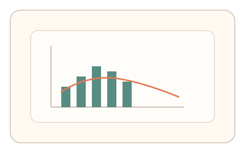

#10
生物肌肉与鼠标运动
已扩展
抖动谱指纹
在小范围保持轻微移动，通过抖动频谱与能量分布识别真实人类噪声。
概念原文
要求用户在小圆内“轻微移动保持”，采集高频抖动的频谱分布（1/f 噪声特征、频段能量比例）。脚本若用平滑噪声或白噪声会表现出异常谱特征。
验证目标从“轨迹是否正确”转为“噪声是否像人”。
研究背景
人类精细动作存在生理性微抖动，频谱常表现为特定的能量分布与 1/f 特征。将轨迹信号进行频谱分析，可捕捉真实人体噪声结构；脚本往往难以生成自然谱形。
核心机制
- 要求用户在小圆内轻微移动保持。
- 高频采样轨迹，计算功率谱密度与频段能量比例。
- 评估谱斜率与能量分布是否落入人类范围。
- 多段采样提高稳定性。
用户流程
- 步骤 1：用户进入“小圆保持移动”任务。
- 步骤 2：系统采集轨迹并进行频谱分析。
- 步骤 3：系统基于抖动谱指纹完成判定。
判定信号
频谱斜率与 1/f 结构
真实肌肉噪声呈现稳定的谱形特征。
频段能量比例
脚本生成的噪声常出现过度平滑或过度随机。
判定逻辑
对比谱斜率与频带能量分布，要求落入可解释范围；过度平滑、白噪声或固定模式判异常。
对抗面
- 脚本生成仿真噪声以伪造频谱
- 回放真实采样数据
防御与缓解
- 随机采样窗口与任务时长，降低回放价值
- 多频段与多信号耦合检测
- 检测谱形随时间的微变化
可达性与风险
允许更大移动范围与更短时长，避免手部疲劳；提供替代通道。
- 低采样率设备难以获得稳定频谱
- 设备级平滑会影响谱形
可视化状态
状态 1：小圆保持
要求在小范围内持续轻微移动。
状态 2：抖动轨迹
轨迹在小圆内形成细微抖动。

状态 3：频谱判定
对比频谱斜率与能量分布。